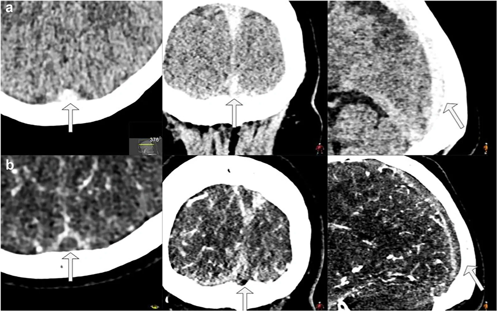
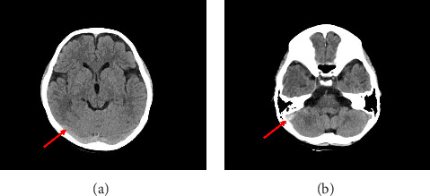
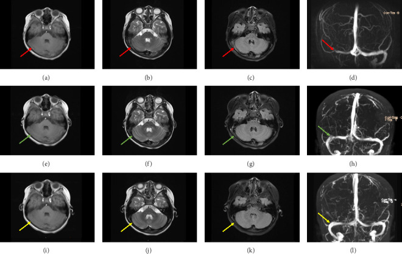
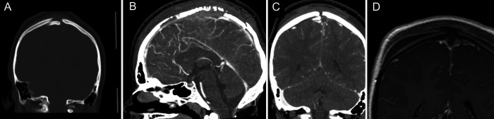

1783 — Huyết khối xoang tĩnh mạch não SAU CHẤN THƯƠNG ĐẦU ở trẻ / Post-traumatic cerebral venous sinus thrombosis in children
Tags: pattern:huyet-khoi-xoang pattern:khuyet-dong-chay pattern:vo-xuong-so pattern:nhoi-mau-tinh-mach pattern:giam-ap-luc-noi-so vung:nao vung:xoang-tinh-mach protocol:NCCT protocol:CTV protocol:MRV protocol:MRI-nao
Mức chắc chắn (certainty): tổng hợp y văn (literature synthesis) — 1 ca nguyên văn nhi có đủ ảnh (bé gái 7 tuổi, PMC12318623), 1 ca nguyên văn nhi có ảnh vỡ xương sọ lún + CTV (PMC9237661), 1 ca người lớn có ảnh CTV + ICP (PMC8497043), ghép với 1 tổng quan hình học–vật lý của huyết khối xoang (PMC13588991), 1 tổng quan hệ thống về CVST sau chấn thương não (PMC9869151), 2 đoàn hệ (30 trẻ hồi sức — PMC13200926; 112 ca tVST người lớn — PMC12819568), 1 nghiên cứu ngưỡng HU trên CT không cản quang (PMC11813980) và 1 tổng quan chấn thương sọ nền (PMC11289000). Không suy rộng số của người lớn cho trẻ mà không ghi rõ; chỗ suy luận được đánh dấu.
Câu chốt: Ở trẻ sau chấn thương đầu, huyết khối xoang không phải biến chứng hiếm — tới 28% bệnh nhi chấn thương não kín có huyết khối xoang, trong đó tới 55% là huyết khối tắc hoàn toàn (PMC8497043). CT không cản quang có thể hoàn toàn bình thường và bị đọc là "chấn động não" (PMC12318623) — vì vậy câu hỏi không phải "có huyết khối hay không" mà là "đường vỡ xương có bắt ngang xoang không, và triệu chứng có dai dẳng bất thường không". Bỏ sót = tăng áp lực nội sọ dai dẳng, nhồi máu tĩnh mạch, chảy máu trong ổ nhồi máu — ba thứ đều chữa được nếu nhận ra sớm.
1. Tổng quan bệnh học – cơ chế hình ảnh (TẠI SAO)
1.1 Dịch tễ và bối cảnh
- CVST ở trẻ nói chung: chiếm 0,5–1,0% mọi đột quỵ nhi, ước tính ~7 ca/1 triệu trẻ (PMC12318623); tỷ lệ mắc 0,6–1,1/100.000 trẻ/năm, tử vong 3–12%, di chứng thần kinh tới 62% người sống (PMC13200926).
- Nhóm nặng (hồi sức): 30 trẻ trong 6 năm tại một trung tâm (PMC13200926): 63% CVST nguyên phát, 47% có nhồi máu não kèm theo, 30% có xuất huyết nội sọ, 17% tử vong.
- Sau chấn thương não kín: tới 28% bệnh nhi có huyết khối xoang; 55% trong số đó tắc hoàn toàn (PMC8497043). Vỡ xương sọ 97,3% trong đoàn hệ 112 ca tVST (PMC12819568).
- Vỡ sọ nền: chiếm 3,5–24% các vỡ xương sọ và 4% mọi chấn thương đầu; biến cố mạch máu–não gặp ở 8,5% ca vỡ sọ nền kín (PMC11289000).
- Tiên lượng theo vị trí: huyết khối đường giữa (xoang dọc trên, torcula, tĩnh mạch não sâu) làm tăng tử vong trong phân tích hiệu chỉnh ở 2 nghiên cứu người lớn/mọi tuổi (PMC9869151). Nhồi máu tĩnh mạch gặp 7–18% (người lớn/mọi tuổi) nhưng 38% (3/8) trong loạt nhi duy nhất; không có tử vong trong tổng số 50 trẻ CVST sau chấn thương của các loạt nhi (PMC9869151).
1.2 Sinh lý bệnh — vì sao chấn thương lại gây huyết khối
- Rách nội mạc tại chỗ xoang bị xương đè/vỡ. Đường vỡ bắt ngang rãnh xoang (sigmoid groove, rãnh xoang dọc trên) làm đứt lớp nội mạc và bộc lộ collagen → hoạt hóa tiểu cầu và dòng thác đông máu ngay tại chỗ (PMC13588991; PMC11289000).
- Ứ trệ do xoang bị chèn ép. Máu tụ ngoài màng cứng, mảnh xương lún hoặc phù não làm giảm khẩu kính lòng xoang → vận tốc dòng giảm, hình thành vùng xoáy sau chỗ hẹp. Chèn ép ngoài và huyết khối trong lòng có thể cùng tồn tại, và đây là điểm làm CTV khó đọc nhất (PMC9869151).
- Tăng đông toàn thân sau chấn thương. Giải phóng yếu tố mô từ não, tăng yếu tố VIII/von Willebrand, bất động, mất nước do nôn — đều đẩy về phía tạo huyết khối.
- Hệ quả: tăng áp lực tĩnh mạch → giảm hấp thu dịch não tủy → tăng áp lực nội sọ; nặng hơn là nhồi máu tĩnh mạch (phù độc tế bào + xuất huyết trong ổ nhồi máu).
1.3 TẠI SAO nhìn thấy trên từng chuỗi xung (vật lý + mô bệnh)
| Chuỗi / kỹ thuật | Cơ chế vật lý | Ngưỡng / con số thực hành |
|---|---|---|
| CT không cản quang (NCCT) | Cục máu đông co rút, hồng cầu cô đặc → tăng đậm độ so với máu đang chảy | Huyết khối 50–80 HU, máu chảy 30–40 HU (PMC13588991); cut-off 61 HU: Se 77,1% / Sp 92,5%, AUC 0,88; tỷ số chuẩn hóa HU/H 1,41 · HU/ĐM cảnh trong 1,52 · HU/ĐM nền 1,63 · HU/nhu mô trán 1,6 · HU−ĐM nền 23 (PMC11813980) |
| CTV | Cản quang không vào được đoạn có huyết khối → khuyết thuốc; màng cứng quanh xoang vẫn ngấm → "empty delta" | Thì tĩnh mạch muộn 20–25 giây; xoang hang cần 45 giây (PMC13588991) |
| MRI T1 | Methemoglobin nội bào (bán cấp sớm) → T1 sáng | T1 sáng mạnh nhất ~3–7 ngày, kéo dài tới 1 tháng (PMC13588991) |
| MRI T2/T2* | Deoxyhemoglobin (cấp) → T2 tối, blooming trên T2*/SWI | Phù hợp với xuất huyết trong ổ nhồi máu (30% ca hồi sức — PMC13200926) |
| MRV TOF | Tín hiệu đến từ spin mới chảy vào lát cắt; huyết khối chặn dòng → mất tín hiệu | Có dương tính giả ở xoang giảm sản/hạt màng nhện/dòng chảy chậm → không dùng MRV đơn độc để chẩn đoán (PMC13588991) |
| DWI/ADC | Nhồi máu tĩnh mạch gây phù độc tế bào → DWI sáng, ADC thấp | Phân biệt với phù mạch (ADC tăng) của PRES/ARIA |

(a) CT không cản quang: tăng đậm độ trong lòng xoang dọc trên (mũi tên) — dấu "cord sign"; (b) CTV: khuyết thuốc trong xoang dọc trên, tương ứng "empty delta". Ảnh: Delgado AF và cs., Insights Imaging 2026, Fig. 1 (PMC13588991), CC BY 4.0.2. Mẫu hình + chẩn đoán phân biệt theo vị trí (gamut)
Nguyên tắc: với trẻ chấn thương đầu, vị trí đường vỡ xương dự báo vị trí huyết khối — đọc phim theo đường đi của xoang, không theo "vùng não bị thương".
- Xoang dọc trên (SSS) — đường giữa: vỡ xương lún đường giữa, vỡ sọ nền trước; huyết khối SSS đường giữa là nhóm tăng tử vong (PMC9869151) và hay gây nhồi máu hai bên ký sinh + xuất huyết cạnh đường giữa. Ca nguyên văn nhi: mảnh xương lún đường giữa + CTV mất tín hiệu SSS (PMC9237661).
- Xoang ngang – xích-ma (TS/SS): vỡ xương thái dương, vỡ rãnh xích-ma, viêm tai–xương chũm; đây là vị trí hay bị bỏ sót nhất vì (a) ngay sát xương đá → streak artifact trên CT, (b) trẻ chỉ nôn/đau đầu. Ca nhi 7 tuổi của bài này: huyết khối TS/SS phải + tĩnh mạch cảnh trong (PMC12318623).
- Tĩnh mạch cảnh trong đoạn sọ: lan xuống từ xích-ma; khác huyết khối do nhiễm trùng (Lemierre) ở chỗ không có ổ viêm và có đường vỡ xương.
- Tĩnh mạch não sâu (thalamus, thể vân): hiếm sau chấn thương; khi có thì hai bên, đối xứng → dễ nhầm với nhồi máu động mạch/thalamic infarct.
- Tĩnh mạch vỏ não đơn thuần: huyết khối không tắc xoang lớn — CTV có thể bỏ sót; MRI T1 sau tiêm + SWI nhạy hơn.
Gamut của "xoang tăng đậm độ" trên CT chấn thương (5 nhóm): (1) huyết khối thật; (2) máu tụ trong/ngoài màng cứng đè lên xoang; (3) cản quang tồn dư từ lần chụp trước; (4) hematocrit cao/mất nước (tăng đậm độ toàn bộ hệ tĩnh mạch, không khu trú); (5) giả ảnh do xương đá/xương chũm.
3. Bảng so sánh phân biệt (ma trận đối chiếu)
| Thực thể (entity) | Hình ảnh điển hình | Chốt vào (rule-in) | Chốt loại (rule-out) | Gợi ý xác nhận |
|---|---|---|---|---|
| Huyết khối xoang sau chấn thương (thrombus thật) | NCCT: tăng đậm độ khu trú trong lòng xoang, xoang căng giãn tại chỗ; CTV: khuyết thuốc liên tục ≥ 1 đoạn xoang; MRI: T1 sáng/T2 tối ở giai đoạn bán cấp | Khuyết thuốc trong lòng xoang + tăng đậm độ tại CÙNG vị trí trên NCCT + đường vỡ xương bắt ngang xoang | Xoang ngấm đều ở thì tĩnh mạch muộn; không có đường vỡ xương tương ứng | CTV tĩnh mạch muộn 20–25 giây; MRI + MRV nếu cần theo dõi |
| Chèn ép xoang đơn thuần (máu tụ ngoài màng cứng / xương lún) | Khối máu tụ đè dẹt xoang từ ngoài; lòng xoang còn cản quang một phần; xương lún chạm xoang | Khuyết thuốc có bờ ngoài lõm theo khối máu tụ, hết khi giải ép; không có tăng đậm độ trong lòng xoang trên NCCT | Có tăng đậm độ trong lòng xoang cùng chỗ → huyết khối thật (có thể kèm chèn ép) | CTV trước–sau giải ép; MRI T1 (methemoglobin trong lòng xoang) |
| Cản quang tồn dư | Toàn bộ hệ tĩnh mạch tăng đậm độ đều, thường xoang bên phải > trái | Hỏi thuốc cản quang trong 24 giờ; ngấm đều nhiều xoang | Chỉ một đoạn xoang tăng đậm độ, có giãn khu trú → huyết khối | So sánh HU với ĐM cảnh trong/ĐM nền (PMC11813980) |
| Hạt màng nhện (arachnoid granulation) | Khuyết thuốc bờ trơn, hình bầu dục, sát thành xoang, thường xoang ngang; không tăng đậm độ trên NCCT | Bờ đều, không đổi theo thì, cùng tỷ trọng dịch não tủy trên NCCT | Tăng đậm độ trên NCCT + bờ không đều + xoang giãn → huyết khối | Đối chiếu NCCT; MRI T2 (hạt màng nhện sáng như dịch não tủy) |
| Xoang giảm sản / dòng chảy chậm | Mất tín hiệu cả đoạn dài trên MRV TOF, thường xoang ngang trái; CTV lại thấy thuốc vào bình thường | CTV có cản quang trong lòng dù MRV trống | CTV cũng khuyết thuốc + NCCT tăng đậm độ → huyết khối | Luôn đọc CTV/MRV cùng NCCT; so xoang hai bên |
| Hẹp xoang do tăng áp lực nội sọ | Hẹp hai bên, đối xứng, xoang ngang; não thất bình thường/thóp căng | Hẹp đối xứng + không khuyết thuốc hoàn toàn + đáp ứng khi hạ áp lực | Hẹp một bên, kèm tăng đậm độ NCCT → huyết khối | Đo áp lực mở nếu nghi; MRI não + MRV |
| Huyết khối tĩnh mạch vỏ não | Khuyết thuốc ở tĩnh mạch vỏ; xuất huyết thùy não không theo lãnh thổ động mạch | Xuất huyết thùy + phù quanh ổ xuất huyết + tĩnh mạch vỏ không ngấm | Không có xuất huyết thùy, chỉ tổn thương nhu mô theo lãnh thổ → nhồi máu động mạch | MRI T1 sau tiêm + SWI; CTV có cửa sổ mỏng |
4. Protocol chụp + phân tầng xử trí
4.1 Chọn chuỗi xung theo bước
- Bước 1 — NCCT lát mỏng ≤ 1 mm, cửa sổ mô mềm + cửa sổ xương: đọc đường vỡ xương trước, rồi so độ đậm độ xoang với ĐM cảnh trong/ĐM nền. Ghi HU tại chỗ nghi ngờ; ngưỡng tham chiếu 61 HU (Se 77,1%/Sp 92,5%) và các tỷ số chuẩn hóa (PMC11813980).
- Bước 2 — CTV khi có bất kỳ dấu hiệu nào: vỡ xương bắt ngang xoang (rãnh xích-ma, xoang dọc trên), máu tụ ngoài màng cứng đè xoang, triệu chứng dai dẳng > 48–72 giờ (nôn, đau đầu) hoặc tri giác không cải thiện như kỳ vọng, tăng áp lực nội sọ không giải thích. Thì tĩnh mạch muộn 20–25 giây; xoang hang 45 giây (PMC13588991).
- Bước 3 — MRI/MRV khi: cần lặp lại nhiều lần (trẻ nhỏ, lo ngại liều xạ), CTV không kết luận, hoặc nghi huyết khối tĩnh mạch vỏ não/nhu mô. Dùng T1 không tiêm + T2 + SWI + T1 sau tiêm + MRV — T1 sáng của methemoglobin là dấu đặc hiệu cho huyết khối (PMC13588991).
- Bước 4 — theo dõi: chụp lại sau 3 tháng (và 6 tháng nếu còn triệu chứng). Tái thông hoàn toàn 41–80% (mọi tuổi) và 70–86% ở các loạt nhi (PMC9869151); trong đoàn hệ 112 ca tVST, 50% tái thông trong 6 tháng (PMC12819568). Không có bằng chứng cho việc chụp lại định kỳ ở trẻ không triệu chứng — quyết định theo lâm sàng (suy luận từ PMC9869151).
4.2 Chống đông khi có xuất huyết nội sọ kèm theo
- Bằng chứng nhi yếu nhất trong toàn bộ chủ đề này. Loạt nhi duy nhất: 14/20 trẻ có CVST sau chấn thương được chống đông, 13 trẻ có xuất huyết nội sọ đồng thời; khởi động trung vị ngày 7 (2–48 ngày) sau khi chứng minh huyết khối tồn tại (9/14) hoặc lan rộng (5/14) trên chụp tĩnh mạch; 3 trẻ chảy máu nhẹ (1 chảy máu cam, 2 lan rộng xuất huyết không triệu chứng) và không trẻ nào xấu đi đáng kể (PMC9869151).
- Ca người lớn minh họa: vỡ xương sọ lún + huyết khối tắc hoàn toàn 1/3 sau xoang dọc trên, tăng áp lực nội sọ kháng trị; chống đông khởi động ngày 6 sau chấn thương → áp lực nội sọ về bình thường, ra viện không di chứng vận động (PMC8497043). Suy luận: ở trẻ có huyết khối tắc hoàn toàn + tăng áp lực nội sọ kháng trị + ổ xuất huyết ổn định, lợi ích có thể vượt nguy cơ — nhưng phải cá thể hóa và có hình ảnh đối chiếu.
flowchart TD
A[Trẻ chấn thương đầu + đau đầu/nôn dai dẳng] --> B[NCCT lát mỏng 1 mm]
B --> C{Đường vỡ xương bắt ngang xoang?}
C -->|Có| D[CTV thì tĩnh mạch muộn 20-25 giây]
C -->|Không| E{Xoang tăng đậm độ khu trú trên NCCT?}
E -->|Có| D
E -->|Không| F{Tri giác không cải thiện hoặc ICP tăng?}
F -->|Có| D
F -->|Không| G[Theo dõi lâm sàng, chụp lại nếu triệu chứng tiến triển]
D --> H{Khuyết thuốc trong lòng xoang?}
H -->|Có| I[Xác nhận huyết khối xoang]
H -->|Không| J[Loại trừ chèn ép đơn thuần và hạt màng nhện]
I --> K{Có xuất huyết nội sọ kèm theo?}
K -->|Không| L[Chống đông điều trị theo phác đồ CVST]
K -->|Có| M[Theo dõi sát, chống đông khi huyết khối tồn tại hoặc lan rộng]
L --> N[Chụp lại sau 3 tháng]
M --> N
5. Biến thể bình thường và cạm bẫy
- "CT bình thường" không loại trừ: bé gái 7 tuổi ngã nhẹ, CT tại tuyến trước đọc là bình thường và chẩn đoán "chấn động não"; đến 60 giờ vẫn nôn, CT lần 2 mới thấy tăng đậm độ xoang ngang–xích-ma phải, MRI/MRV xác nhận huyết khối lan tới tĩnh mạch cảnh trong (PMC12318623). Bài học: đọc lại phim cũ + so sánh HU, đừng chỉ đọc báo cáo.
- Đè nén ≠ huyết khối: máu tụ ngoài màng cứng làm xoang dẹt và có thể giả "khuyết thuốc"; phân biệt bằng bờ ngoài lõm theo khối máu tụ và không có tăng đậm độ trong lòng xoang trên NCCT (PMC9869151; PMC13588991). Hai thứ có thể cùng tồn tại.
- Hạt màng nhện là "kẻ bắt chước" số 1 ở xoang ngang: bờ trơn, hình bầu dục, cùng tỷ trọng dịch não tủy; nếu chỉ đọc CTV sẽ gọi nhầm là huyết khối (PMC13588991).
- Hiệu ứng dòng chảy (flow artifact) trên T1 3D GRE/MRV TOF: tín hiệu trống ở xoang có dòng nhanh → giả khuyết thuốc; đối chiếu CTV hoặc MRI T1 sau tiêm (PMC13588991).
- Xoang giảm sản (thường ngang trái) + dòng chảy chậm → MRV mất tín hiệu cả đoạn dài nhưng CTV bình thường; không đặt stent, không chống đông chỉ vì MRV (PMC13588991).
- Streak artifact từ xương đá ở xoang xích-ma làm giảm độ nhạy của NCCT; nếu nghi ngờ, hạ cửa sổ + đọc lại trên CTV (PMC13588991).
- Sai lầm tìm kiếm (satisfaction of search): đã thấy máu tụ dưới màng cứng/phù não là dừng, không đọc đường vỡ xương và xoang — đây là cơ chế bỏ sót phổ biến nhất trong chấn thương đầu.
- Chống đông ở trẻ có ổ xuất huyết: không có ngưỡng thể tích ổ xuất huyết được chứng minh; quyết định dựa trên huyết khối tắc hoàn toàn + tăng áp lực nội sọ + ổ xuất huyết ổn định (suy luận từ PMC8497043; PMC9869151).
6. Tự lượng giá — Blind Quiz
Ca 1 — Bé gái 7 tuổi, ngã tại nhà, nôn và chóng mặt 60 giờ, CT tại tuyến trước "bình thường".

- Câu hỏi: Có bất thường nào trên 2 lát cắt này? Vì sao CT lần đầu có thể bình thường? Bước tiếp theo là gì?
Bấm để hiện đáp án (findings + chẩn đoán)
- Findings: (a) tăng đậm độ dạng dải ở xoang ngang phải; (b) tăng đậm độ xoang xích-ma phải (mũi tên đỏ) — dấu "cord sign" cấp.
- Chẩn đoán: huyết khối xoang ngang–xích-ma phải sau chấn thương đầu kín. Cục máu đông co rút làm hồng cầu cô đặc → tăng đậm độ; ở trẻ nhỏ, xoang mảnh và nhiễu xương đá làm dấu này rất dễ bị bỏ.
- Vì sao CT đầu bình thường: huyết khối hình thành muộn sau chấn thương (giờ đến ngày) và dấu tăng đậm độ mờ, khu trú; đọc trên lát dày 5 mm càng khó.
- Bước tiếp: CTV hoặc MRI/MRV — ca này MRV xác nhận huyết khối lan tới tĩnh mạch cảnh trong đoạn sọ.
- Nguồn ảnh: Zhang Y, Liu H, Ding H, Case Rep Pediatr 2025, Fig. 2 (PMC12318623), CC BY 4.0.
Ca 2 — Cùng bệnh nhi, diễn tiến hình ảnh trước – sau điều trị.

- Câu hỏi: Ba hàng ảnh khác nhau ở điểm nào? Dấu hiệu nào chứng minh huyết khối bán cấp? Tái thông mất bao lâu?
Bấm để hiện đáp án (findings + chẩn đoán)
- Findings: hàng 1 (trước điều trị): T1 tăng tín hiệu hỗn hợp trong xoang ngang phải, T2/FLAIR tăng tín hiệu, MRV mất tín hiệu xoang ngang–xích-ma; hàng 2 (sau 7 ngày): T2/FLAIR giảm tín hiệu, MRV tái thông một phần; hàng 3 (sau 3 tháng): tín hiệu trở về bình thường, MRV tái thông hoàn toàn.
- Vì sao T1 sáng: methemoglobin nội bào ở giai đoạn bán cấp sớm — dấu hiệu đặc hiệu cho huyết khối (khác dòng chảy chậm).
- Điều trị: enoxaparin chuyển tiếp rivaroxaban, không biến chứng chảy máu; tái thông hoàn toàn.
- Liên hệ số liệu: tái thông hoàn toàn ở các loạt nhi 70–86%, thời điểm thường trong vài tháng (PMC9869151) — nên chụp lại mốc 3 tháng, không chụp hàng tuần.
- Nguồn ảnh: Zhang Y, Liu H, Ding H, Case Rep Pediatr 2025, Fig. 1 (PMC12318623), CC BY 4.0.
Ca 3 — Trẻ có vỡ xương sọ lún đường giữa, tri giác xấu dần.

- Câu hỏi: Mảnh xương lún nằm ở đâu? Xoang nào bị tắc? Vì sao phải chống đông/thảo luận ngoại khoa sớm?
Bấm để hiện đáp án (findings + chẩn đoán)
- Findings: (A) CT xương coronal: mảnh xương lún đường giữa đè lên xoang dọc trên; (B, C) CTV: mất cản quang xoang dọc trên đoạn sau mảnh lún, có tuần hoàn bàng hệ; (D) hình cộng hưởng cho thấy huyết khối trong lòng xoang.
- Chẩn đoán: huyết khối xoang dọc trên do vỡ xương sọ lún — huyết khối đường giữa thuộc nhóm tăng tử vong (PMC9869151).
- Vì sao sớm: tắc xoang dọc trên làm giảm hấp thu dịch não tủy → tăng áp lực nội sọ; cần hội chẩn giải ép + chống đông tùy tình trạng ổ xuất huyết.
- Nguồn ảnh: Zoerner DM, Reardon T, Miller BA, J Neurosurg Case Lessons 2022, Fig. 1 (PMC9237661), CC BY-NC-ND 4.0.
Bài liên quan chéo
- 1781 – Huyết khối tĩnh mạch não ở trẻ thiếu máu/huyết tán — nền tảng CVST nhi, nguyên nhân không do chấn thương.
- 224 – Chấn thương sọ não ở trẻ — đọc phim chấn thương đầu, phân tầng can thiệp.
- 231 – Tổn thương mạch máu não do chấn thương & vỡ sọ tiến triển — nhóm bệnh mạch máu do chấn thương, nơi CVST là một nhánh.
- 216 – Dị dạng mạch não & huyết khối xoang — bán sắc hình ảnh CVST và bẫy MRV.
- 212 – Xuất huyết dưới nhện — phân biệt máu trong rãnh/xoang với huyết khối xoang.
Ảnh
1783_..._CT_PMC13588991-F1.jpg— NCCT tăng đậm độ + CTV khuyết thuốc xoang dọc trên (CC BY 4.0).1783_..._CT_PMC12318623-F2.jpg— CT giờ 60: tăng đậm độ xoang ngang–xích-ma phải (CC BY 4.0).1783_..._MRI_PMC12318623-F1.jpg— MRI/MRV trước, sau 7 ngày, sau 3 tháng (CC BY 4.0).1783_..._CTV_PMC9237661-F1.jpg— vỡ xương sọ lún đường giữa + tắc xoang dọc trên (CC BY-NC-ND 4.0).- Nguồn + giấy phép từng ảnh:
images/CREDITS.md.
Không dùng để chẩn đoán độc lập khi chưa có người hướng dẫn.